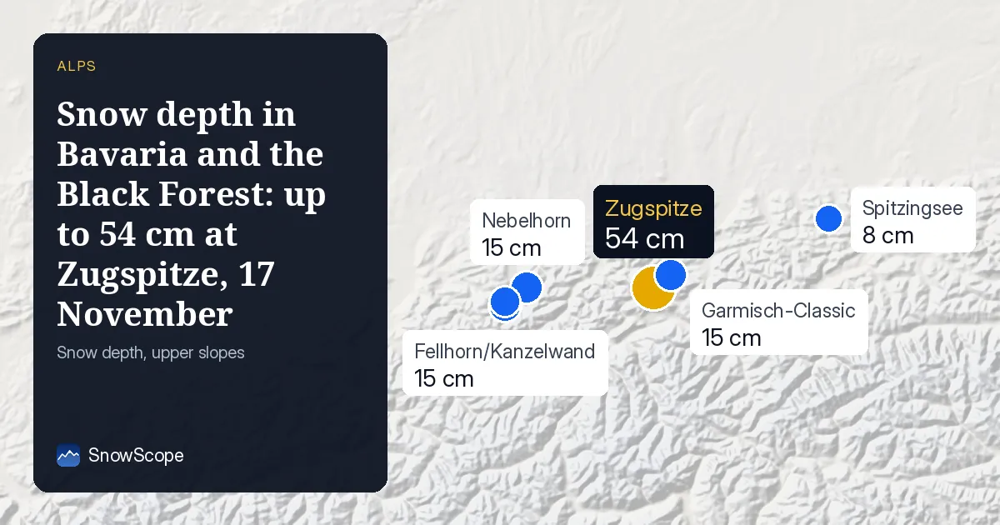

Snow depth in Bavaria and the Black Forest: up to 54 cm at Zugspitze, 17 November
Zugspitze has 54 cm on its upper slopes this Tuesday, the most in Bavaria and the Black Forest.
See the live snow forecast for Zugspitze in the SnowScope appSnow depth, powder alerts and the 3D map, free.
Snow depth, resort by resort
Across all 9 resorts on this list, the middle value is 11 cm on the upper slopes.
The rest of the top five: Fellhorn/Kanzelwand (15 cm), Garmisch-Classic (15 cm), Nebelhorn (15 cm) and Oberstdorf (11 cm).
| Resort | Snow depth | New snow, 72 h | Coming, next days | Top |
|---|---|---|---|---|
| Zugspitze | 54 cm | 12 cm | 20 cm | 2,627 m |
| Fellhorn/Kanzelwand | 15 cm | 7 cm | 33 cm | 1,965 m |
| Garmisch-Classic | 15 cm | 5 cm | 18 cm | 2,047 m |
| Nebelhorn | 15 cm | 7 cm | 32 cm | 2,213 m |
| Oberstdorf | 11 cm | 6 cm | 33 cm | 2,213 m |
| Spitzingsee | 8 cm | 2 cm | 11 cm | 1,569 m |

Resort by resort
Zugspitze: 54 cm on the upper slopes (top lift 2,627 m), 12 cm new in 72 hours, 20 cm more by 20 November.
Fellhorn/Kanzelwand reports 15 cm up top; the lifts reach 1,965 m. Fresh snow: 7 cm in three days, forecast 33 cm by 20 November.
Garmisch-Classic: 15 cm on the upper slopes (top lift 2,047 m), 5 cm new in 72 hours, 18 cm more by 20 November.
Nebelhorn: 15 cm on the upper slopes (top lift 2,213 m), 7 cm new in 72 hours, 32 cm more by 20 November.
Fresh snow, last 72 hours
The last three days brought Zugspitze 12 cm, Fellhorn/Kanzelwand 7 cm and Nebelhorn 7 cm.
The next three days
By 20 November the forecast gives Oberstdorf 33 cm, Fellhorn/Kanzelwand 33 cm and Nebelhorn 32 cm.
Beyond the groomers
Off the groomers the snow is old and firm for now. For touring, the upper slopes with 54 cm give the best base; check the avalanche bulletin before you go.
Without much new snow, the groomed runs are the place to be: firm in the morning, softer by midday on the sunny side.
If you have two days
Best value for two days on skis: Zugspitze, with 54 cm now and 20 cm more expected by 20 November.
For a day trip from Munich or Stuttgart, the Bavarian resorts and the Black Forest are closest; Tyrol and Vorarlberg are worth a night or two.
Tips for skiers
- Check which lifts are open before you drive.
- Start early: the first hours give the best snow after a cold night.
- Winter tyres or chains for the last kilometres to the higher resorts.
- Off-piste only after reading the avalanche bulletin.
About these numbers
Resort snow depths are the deepest snow on the resort's upper slopes on the date shown; they are estimates for an area, not a measurement at one point. Forecasts can change. Always read the official avalanche bulletin before going off-piste.
Cite this report
For research, teaching or the press: the numbers and charts are free to reuse under CC BY 4.0 with this citation.
SnowScope (2026), Snow depth in Bavaria and the Black Forest: up to 54 cm at Zugspitze, 17 November, https://snowscope.app/blog/en/2026/11/schneehoehen-bayern-schwarzwald-17-november-2026.html, accessed 2026-11-17
SnowScope (Atlas Labs). (2026, November 17). Snow depth in Bavaria and the Black Forest: up to 54 cm at Zugspitze, 17 November. SnowScope snow reports. https://snowscope.app/blog/en/2026/11/schneehoehen-bayern-schwarzwald-17-november-2026.html
BibTeX
@misc{snowscope2026schneehoehenbayernschwar,
author = {{SnowScope (Atlas Labs)}},
title = {Snow depth in Bavaria and the Black Forest: up to 54 cm at Zugspitze, 17 November},
year = {2026},
month = nov,
howpublished = {\url{https://snowscope.app/blog/en/2026/11/schneehoehen-bayern-schwarzwald-17-november-2026.html}},
note = {Published 2026-11-17 17:35 UTC; accessed 2026-11-17}
}· CC BY 4.0 · Methods, data and tools →
Zugspitze: snow and temperature by height, this winter vs last (tools) →
Follow Zugspitze
Free: a message when fresh snow is coming, and the forecast every morning.
More snow reports

The snow is shrinking in Germany: 840 km² gone since last week. Snow cover, new snow, resorts and the days ahead in Germany on 17 November.

Zugspitze leads German resorts with 53 cm on 19 November. Snow cover is growing; 38 cm possible in the next week.

Germany has 1790 km2 of snow cover on 20 November, Austria leads with 44 percent white cover. The Allgäu Alps received 34 cm in 72 hours.